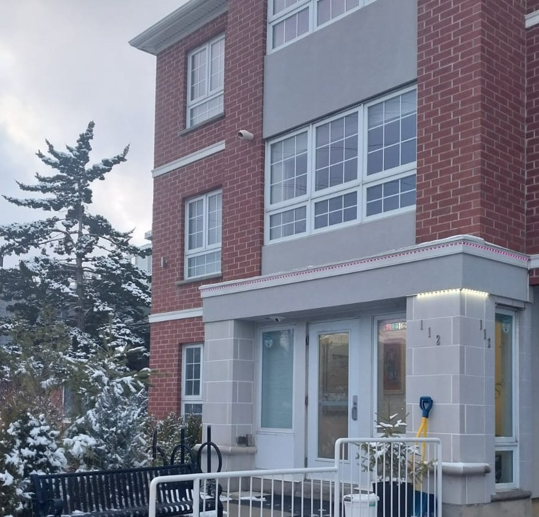
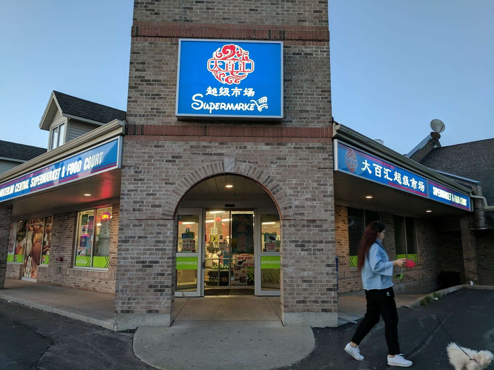
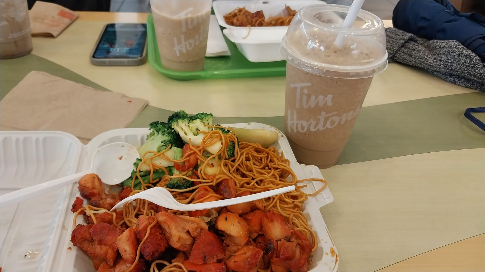
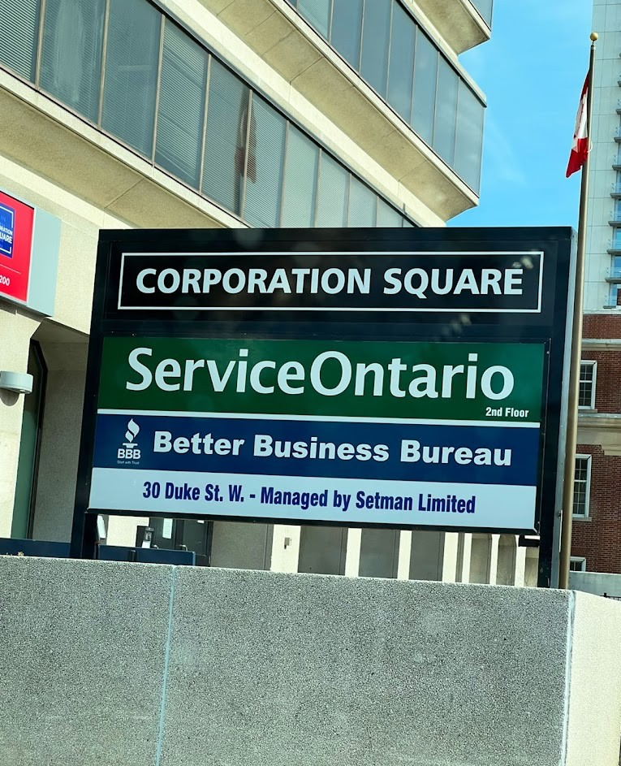

First week in Canada, mild winter.

Ini adalah bagian terakhir dari thread perjalananku ke Waterloo. Hari ini memasuki minggu ketigaku di kota ini. Di luar, matahari bersinar terang membuatku ingin rasanya ke luar jogging sambil menikmati cahaya mentari. Sudah dua minggu ini kota Waterloo berselimut langit abu-abu dan hawa dingin. Sayangnya, hujan salju dua malam terakhir masih menyisakan salju yang cukup banyak. Mungkin sebagian sudah berubah menjadi es. Jadi nampaknya jalanan masih agak licin, not a good idea for jogging. So, lebih baik kita habiskan pagi ini dengan bercerita.
Di Waterloo, aku tinggal di daerah Columbia street, tidak terlalu jauh dari Wilfrid Laurier University, tempatku bekerja nantinya. Dari kantorku yang terletak di Lazaridis Building, jaraknya kurang lebih 700m saja. Tempat tinggalku saat ini memiliki model student apartment. Unit ini terdiri dari 5 kamar tidur, dengan shared kitchen dan shared bathrooms. Jadi, aku berbagi unit dengan empat orang mahasiswa lain, yang kebetulan semuanya adalah undergrad students. Sebenarnya aku berencana akan tinggal di Waterloo selama 6 bulan, tapi kontrak apartemenku hanya 4 bulan. Jadi 2 bulan terakhir nanti mungkin aku harus pindah dan mencari tempat lain. Hmm..., mungkin cerita lebih detail tentang tempat tinggal di Kanada akan aku ceritakan di tulisan lain. Sekarang aku ingin berbagi tentang beberapa tahapan yang sudah aku lalui selama beberapa hari pertama untuk bisa settle di Waterloo.
Aku masuk ke apartemen ini tepat pada tanggal 1 Januari 2023. Yes, new year, new bedroom. Kebetulan, penyewa unit ini (yang kemudian menyewakannya lagi kepadaku) membawakan kuncinya langsung ke apartemen. (Well, sebelumnya dia bersikeras memintaku untuk datang di minggu berikutnya karena dia sedang liburan, tapi ya mau bagaimana lagi, I don't have any other place to stay. Jadi, aku agak keukeuh untuk masuk tanggal 1, sesuai dengan kontrak apartemen.) Ok, next. Seperti biasa, ketika menyewa sebuah unit, meskipun furnished, tetap saja ada beberapa keperluan unit yang tidak disediakan, seperti misalnya perintilan tempat tidur (seperti bantal, sprei, selimut, bed cover), atau peralatan dapur (seperti pisau, alat masak, alat makan, mealbox dan sebagainya). Untungnya, aku sudah sedikit lebih well-prepared kali ini. Untuk peralatan dapur misalnya, aku sudah membawa pisau kecil, gunting, mangkok, gelas, serta sendok/garpu dari Indonesia. Aku juga sudah menyiapkan sprei dan selimut tipis. Walau bagaimanapun juga, ini tentu belum mengakomodasi kebutuhan dasar untuk tinggal. Apalagi dengan suhu di Waterloo yang saat ini sedang memasuki musim dingin. Aku masih membutuhkan bantal, selimut tebal, dan berbagai peralatan masak. Tapi mengingat pengalamanku saat kuliah di Prancis, dimana barangku yang awalnya hanya satu koper “berkembang biak” menjadi berkoper-koper, aku memilih untuk tidak membeli banyak barang di sini. Gratefully, I have a super nice Canadian supervisor yang meminjamkan beberapa keperluan untuk tinggal di sini, seperti bantal, selimut tebal, dan teflon. Beliau juga menawarkan beberapa barang lain jika aku memerlukannya, but for now I have enough to live.
Okay. Jadi, tahapan pertama setelah memiliki akses ke tempat tinggal adalah menyusun barang bawaan yang ada di koper, and it was super quick! All done in less than 30 minutes. Yah, I was excited and exhausted at the same time. Hari sudah mulai gelap ketika aku selesai membereskan barang dan kamar. Badan juga masih terasa letih dan enggan untuk difungsikan keluar mencari makan. So, untuk malam pertama, makan malamku adalah Mie Sedasp instan kuah ditambah kripik yang aku bawa dari rumah. Thanks makanan sejuta umat. Besok kita akan mulai shopping! Yayy!
Untuk transportasi, di Waterloo terdapat transportasi publik seperti bus dan tram yang dikenal dengan nama ION. Transportasi publik ini dikelola oleh operator transportasi publik yang bernama Grand River Transit (GRT). Di Waterloo tidak ada metro karena wilayah kotanya juga tidak besar. Untuk menggunakan GRT, kita dapat membeli tiket sekali jalan, membeli kartu GRT yang dapat diisi ulang, atau berlangganan bulanan. Untuk mahasiswa di University of Waterloo atau Wilfrid Laurier University, biaya langganan GRT sudah termasuk dalam tuition-fee, sehingga kartu pelajar dapat digunakan secara langsung sebagai kartu transportasi. Jika dibutuhkan, informasi mengenai GRT dapat dilihat pada tautan ini. Aku sendiri tidak berlangganan bulanan untuk transportasi publik karena jarak tempat tinggal dan kampus yang juga cukup dekat. Ini cukup menguntungkan karena biaya langganan bulanannya super mahal. Tapi kalau tinggal jauh dengan kampus, lebih baik mengambil langganan bulanan, karena harga tiket satuan jauh lebih mahal.
Tujuanku hari itu adalah Walmart. Jaraknya agak jauh dari tempat tinggalku, sekitar 2,5km. Secara umum, harga bahan makanan di Waterloo agak pricey menurutku. Mungkin bukan agak lagi, tapi mahal poll. Sepertinya Walmart menjadi salah satu opsi tempat belanja bahan makanan yang paling murah. Beruntungnya, aku bukan picky eater. I literally can eat anything, yes, anything (as long as, they are food for human ya). Pengalaman sekian tahun merantau sudah membuat lidahku kebal dengan segala rasa. Jadi makanan apapun, ayo, sikat. Di Walmart, bahan makanan cukup lengkap. Untuk daging, ada berbagai macam daging, fresh maupun olahan. Ada telur, buah, aneka sayuran, tahu, dan macam-macam. Karbohidrat juga bervariasi. Mulai dari pasta, aneka jenis beras, oatmeal, berbagai macam roti, mie, dan of course, Indomie! Yes, Indomie seleraku sudah ekspansi ke berbagai negara, hingga Kanada. Aku tidak berbelanja hari itu. Ya maklum saja, I have no much cash. Itu uang yang aku pakai juga pinjaman dari teman Prancis-ku yang baik hati.
Selain ke Walmart, pada sore harinya aku juga menyempatkan ke salah satu toko Asia yang jaraknya tidak terlalu jauh dari apartemenku (ya, kurang lebih 1km). Namanya Waterloo Central Supermarket. Tapi harga-harga di sini jauh lebih mahal dibandingkan Walmart. Tapi karena saat ke Walmart, aku tidak berbelanja mahal (karena tidak bisa membawa banyak barang), akhirnya aku berbelanja sebagian bahan makanan di supermarket ini. (Btw, karena bingung mau membeli apa, aku membeli merica butiran dengan harga $5. Dan itu butiran ya, bukan bubuk. Jadi kurang tahu nanti bagaimana memakainya tanpa ulekan. Fyuhh...) Oh ya, meskipun rada mahal, nampaknya supermarket ini menjadi salah satu andalan mahasiswa "Asia", karena barang yang dijual cukup lengkap. Mulai dari bahan makanan untuk masakan Cina, Jepang, Korea, Thailand, juga beberapa dari Indonesia. Sayangnya, toko ini tidak menjual tempe.
Hal berikutnya yang harus diurus adalah membuat akun bank. Beruntungnya ketika tiba di sini, aku mendapatkan teman, dua mahasiswa Indonesia yang saat ini juga tengah melaksanakan studi di Wilfrid Laurier University. Nah ini juga menjadi poin penting ketika kita baru tiba di negara yang baru. Ini tips berguna bagi yang baru pindah ke luar negeri. Ada baiknya kita berusaha mencari teman Indonesia yang sudah menetap di sana, sehingga kita dapat bertanya atau meminta bantuan ketika menemui kesulitan. Lebih bagus lagi kalau bisa mendapatkan teman/kenalan orang lokal di negara tujuan. Jadi, intinya berusaha mencari teman, because life could be easier with many friends.
Tanggal 3 Januari 2023.
Hari ini kedua teman baruku akan mengantarkan aku untuk membuat akun bank. Di Waterloo, terdapat beberapa pilihan bank yang dapat dipilih, seperti Royal Bank of Canada (RBC), Scotiabank, TD Canada Trust, dan lain-lain. RBC menjadi pilihanku karena lokasinya yang dekat dengan kampus. Untuk RBC, kebetulan saat ini mereka menawarkan biaya gratis selama 1 tahun. Kita juga dapat membuat dua akun bank, yaitu checking account dan saving account. Checking account adalah akun yang dapat digunakan setiap saat, dimana uang yang tersimpat dapat diambil kapanpun dengan menggunakan kartu debit. Sementara saving account adalah akun yang dapat digunakan untuk menabung, dengan bunga per bulan, namun uangnya tidak dapat digunakan setiap saat (untuk menggunakannya, uang harus dikirimkan terlebih dahulu ke checking account kita.
Proses pembuatan akun bank cukup mudah. Kita hanya perlu datang ke bank dengan membawa pasport dan beberapa dokumen lain yang terkait dengan status kita di Kanada. Misalnya pada kasusku, selain pasport aku juga membawa official work permit, appointment letter dari kampus, dan surat keterangan tempat tinggal. Namun perlu diperhatikan bahwa kadangkala, pembuatan akun tidak dapat dilakukan pada waktu yang sama dengan kedatangan kita ke bank. Mungkin saja tidak ada petugas yang sedang free untuk membantu realisasi akun. Jadi, ada baiknya sebelum ke bank kita membuat janji temu terlebih dahulu. Kemudian untuk kartu ATM, di RBC tidak diberikan secara langsung pada hari ketika kita membuat akun. Kartu akan dikirimkan ke alamat tempat tinggal kita dalam waktu 7-10 hari kerja. Selama waktu tunggu tersebut, bank dapat memberi kita sebuah kartu sementara (temporary card). But, you should ask for one, kalau tidak ya tidak akan diberikan. Namun berdasarkan informasi dari temanku, beberapa bank lain dapat memberikan kartu ATM pada hari yang sama dimana kita membuat akun.
Selesai mengurus akun bank, kami beranjak ke kampus untuk menyelesaikan beberapa urusan administrasiku di kampus. Beberapa urusan administrasi yang harus diselesaikan di kampus pasca kedatangan misalnya lapor diri kedatangan kita dan menyerahkan official work permit, meminta ID number, membuat kartu akses kampus yang bernama OneCard, menyerahkan bukti akun bank ke Payroll office of WLU, dan mendaftar untuk asuransi kesehatan yang bernama UHIP (University Health Insurance Plan). Wilfrid Laurier University memiliki beberapa situs kampus, jadi urusan administrasi ini cukup menyita waktu karena kami harus berpindah dari satu situs ke situs yang lain. Ditambah juga karena agak kebingungan harus dimulai dengan mengurus yang mana. Tapi tenang saja, karena ada International Office WLU yang dapat memberikan petunjuk dan bantuan jika kita mengalami kesulitan. Hmm... masalah per-administrasi-an kampus tidak aku jelaskan secara detail ya, but feel free to ask if you have any question.
Sekitar pukul 14.00, overall, urusan di kampus sudah selesai. Kami tidak bisa menyelesaikan semuanya, tapi karena perut sudah keroncongan, kami beranjak pergi ke Conestoga Mall untuk makan siang. Conestoga mall menjadi tujuan kami karena aku harus membeli SIM Card dan aku ingin melihat beberapa opsi jaket winter yang dapat aku beli. Di Conestoga mall terdapat food court dengan berbagai pilihan makanan yang menarik. Kami memilih untuk makan di Bourbon St. Grill dan minum di Tim Hortons. Siang itu untuk pertama kalinya aku makan dengan "normal" dan penuh selera, sejak terakhir kali makan siang bersama keluargaku di Bandara Ngurah Rai. Harganya mahal sih, makanannya sekitar $14, tapi minumannya dapat traktiran dari teman baruku, Dea, yang super baik. Hihiii, tidak apa-apa mahal, yang penting enjoy dan happy.
Selesai makan siang, kami bergegas hunting SIM Card untuk ponselku. Terdapat berbagai pilihan operator dengan berbagai penawaran paket (plan) yang dapat diambil, seperti Telus, Fido, Rogers, dan lain-lain. Biaya kartu SIM dengan free message/phone di Kanada memang relatif mahal, apalagi jika kita ingin menggunakan paket internet. Misalnya saja untuk paket data yang aku ambil, Fido, dengan unlimited message and call, ditambah 20GB data plan per bulan, biayanya adalah $60 plus tax. Itu sudah paket termurah yang paling memungkinkan aku ambil sesuai dengan kebutuhanku (sebenarnya aku tidak membutuhkan paket data sebanyak itu karena di apartemen sudah tersedia wifi). Ditambah lagi, untuk aktivasi kartu SIM, dibutuhkan biaya tambahan sebesar $50 plus tax. Namun beruntungnya karena saat itu masih Boxing Day, aku mendapatkan beberapa potongan harga, seperti diskon $20 per bulan, dan free SIM Card activation. Yah, meskipun jatuhnya masih mahal, tapi ini lumayan membantu. Lagipula, I don't have many options. Oh iya, beberapa provider mungkin tidak kompatibel dengan ponsel kita, karena beberapa SIM hanya dapat digunakan untuk ponsel produksi Kanada atau USA. Umumnya, koneksi Roger dapat digunakan untuk ponsel "internasional" (seperti Samsung atau Sony misalnya). So, aku sarankan untuk lebih teliti dalam membeli SIM Card. Untuk hal ini, operator Fido kebetulan sesuai dengan ponselku. Baiklah, selesai urusan SIM Card, kami window shopping sebentar karena di waktu ini masih banyak diskon yang bertebaran. Tapi karena uang yang aku bawa super-duper terbatas, jadi ya aku tidak membeli apapun.
Tanggal 4 Januari 2023.
Aku berencana untuk ke kampus hari ini, menemui supervisorku, sekalian untuk berkenalan dengan para staff di Mathematics Department, tempat aku bertugas nanti. Aku juga harus menemui sekretaris departemen untuk meminta kunci akses ke ruanganku. Namun sebelumnya, aku memutuskan untuk ke kantor Service Canada untuk mengurus SIN (Social Insurance Number). SIN adalah nomor unik yang digunakan untuk mengidentifikasi setiap orang di Kanada. Nomor ini adalah salah satu hal yang super-wajib (tanpa kecuali) dimiliki oleh setiap orang yang tinggal di Kanada, baik secara permanen maupun temporal (informasi terkait SIN dapat dibaca di sini). Sebenarnya, SIN dapat diurus secara online. Namun karena aku ingin mendapatkan nomor SIN secepatnya, maka aku memutuskan untuk mengurusnya secara langsung di kantor Service Canada. Persyaratan membuat SIN cukup mudah, hanya pasport dan work permit (atau study permit jika memiliki status pelajar di Kanada). Di Waterloo, terdapat dua kantor Service Canada yang dapat dikunjungi. Kita dapat membuat janji temu sebelum kedatangan ke sana untuk menghemat waktu antrian.
Hari itu aku tidak mengambil janji temu dan memilih datang langsung ke kantor Service Canada. Awalnya aku berpikir ini akan lebih praktis, karena jika membuat janji temu mungkin saja aku baru akan bisa datang beberapa hari/minggu kemudian. Sebenarnya hari itu sudah aku rencanakan untuk datang di pagi hari. Namun karena sifat ceroboh-ku kumat, aku melupakan dokumen persyaratan di kamar, hal yang paling penting yang harusnya aku bawa hari itu. Jadilah aku kembali pulang untuk mengambilnya. Akhirnya, aku tiba di sana sekitar pukul 10.30 dan benar saja, antrian sudah sangat panjang. Mayoritas yang mengantre adalah mahasiswa internasional yang juga mendaftarkan diri untuk mendapatkan nomor SIN. Setelah mengantre selama kurang lebih 1.5 jam, akhirnya aku mendapatkan giliran masuk. Proses penerbitan SIN pada dasarnya super cepat, hanya 10-15 menit. Yang melelahkan itu ya menunggu, mengantre. Jadi, inilah mengapa mengambil antrian sebelum ke Service Canada sangat disarankan, agar kita tidak perlu menghabiskan banyak waktu hanya untuk menunggu.
Hari Kamis, 5 Januari 2023, aku memutuskan untuk mulai bekerja. Namun jet-lag yang parah membuatku mengantuk berat sepanjang hari dan aku malah tertidur sepanjang waktu di kantor. Kuputuskan untuk mulai bekerja di minggu berikutnya saja kalau kondisiku sudah lebih baik. Mostly, sampai dengan hari keempat, hampir semua urusan per-administrasi-an-ku sudah selesai. Selanjutnya aku perlu mengurus OHIP (Ontario Health Insurance Plan). Ini merupakan program asuransi kesehatan yang diberikan kepada penduduk Ontario yang eligible. OHIP diberikan secara gratis, karena dibayarkan oleh pemerintah dari pajak para pekerja di Ontario. Biasanya, pemegang work permit selama minimal 6 bulan dapat mengurus OHIP. Namun, mahasiswa internasional tidak berhak untuk OHIP, dan harus menggunakan UHIP (University Health Insurance Plan).
Jumat, 6 Januari 2022.
Awalnya aku berencana untuk mengurus OHIP hari Sabtu besok karena kebetulan ada Service Ontario yang buka setengah hari pada hari Sabtu. Tapi rencana berubah karena otak jetlag-ku tidak bisa memproses informasi dengan baik, apalagi untuk mulai mengerjakan riset. Jadilah hari Jumat pagi itu aku ke kantor Service Ontario yang ada di Lexington Road. Jaraknya kurang lebih 2km dari tempat tinggalku, sehingga kuputuskan untuk berjalan kaki saja. Kebetulan cuaca hari ini juga tidak buruk.
Setelah menempuh perjalanan selama setengah jam, akhirnya sampailah aku di Service Ontario. Kali ini sudah aku periksa dengan benar dan sudah kupastikan tidak ada dokumen yang tertinggal. Antrian tidak terlalu panjang. Beberapa orang yang mengantri di depanku ada juga yang mengurus pengajuan OHIP, atau perpanjangan Health Card, serta driving license. Selama kurang lebih 20 menit mengantri, tibalah giliranku. Petugas bertanya tentang tujuanku, kemudian statusku di Kanada. Aku menjelaskan bahwa aku memiliki work permit dan ingin mengajukan OHIP untuk pertama kali. And you know what? The lady said “You go to the wrong place. You have to go to the Service Ontario in Duke Street!”.
O h – m y – G o d !
Aku hanya menjawab “Thank you.” dan segera berlalu dari sana. Entahlah, ada rasa kesal juga. Bukan kepada Madam tadi, tetapi karena kecerobohanku yang entah mengapa aku ulangi lagi dan lagi. Padahal, pengajuan OHIP ini pun sudah aku rencanakan sejak beberapa hari sebelumnya. Tidak habis pikir saja mengapa lagi-lagi ada kesalahan. Bayangkan saja aku sudah menempuh jarak 2km berjalan kaki, dan sekarang harus pulang berjalan kaki lagi sejauh 2km, dengan tangan kosong, dan tentu saja, aku harus mengulangi proses pengajuan ini. Hmmm… tapi apa daya, daripada kesal berlama-lama, aku segera googling mencari informasi jam buka Service Ontario di Duke Street. Ternyata, tempatnya ada di kawasan Service Canada, tempat dimana aku mengurus pengajuan SIN pada dua hari yang lalu. Kalau saja aku lebih teliti, mungkin urusan OHIP ini sudah selesai sejak hari Rabu lalu.
Kutepis sekali lagi rasa kesalku, dan segera mencari informasi tentang transportasi umum untuk ke Duke Street. Okay, aku harus naik bus di ujung jalan sana, kira-kira 1km dari tempatku berdiri. Aku putuskan untuk melanjutkan perjuanganku mengurus OHIP hari itu juga. Kalaupun pulang, aku akan merasa dongkol hingga malam, dan belum tentu juga hari Senin nanti aku mempunyai semangat untuk mengurus urusan administrasi ini lagi. Kebetulan hari ini OHIP buka hingga pukul 17.00. Aku segera bergegas ke tempat pemberhentian bus. Karena belum familiar dengan daerah itu, aku terlambat selama 1 menit karena aku salah memilih tempat pemberhentian. Hmmm... bus yang menjadi tujuanku baru saja berlalu, sehingga aku harus menunggu lagi bus berikutnya selama kurang lebih 15 menit. Okay, keep calm, girl.
Okay, akhirnya sekitar pukul 3 sore kurang, aku sampai di Service Ontario Duke street. Segera aku ambil nomor antrian. Sudah sangat banyak orang yang mengantri untuk dilayani sesuai dengan urusannya masing-masing. Aku mendapatkan nomor H102 (H mengindikasikan Health Card, sesuai dengan tujuanku). Alright! I’m ready for another long queue! Sebenarnya, untuk ke Service Ontario ini, kita dapat membuat janji temu sebelumnya secara online. Ini tentu saja akan jauh lebih menghemat waktu, dibandingkan dengan walk in dan menunggu antrian. Namun bagaimanapun, aku putuskan untuk menunggu saja. Antrian bergerak sangat lambat, berbeda dengan antrian di Service Ontario yang sebelumnya. Beberapa orang ada yang memutuskan untuk pulang karena enggan mengantre sebanyak dan selama itu.
Sudah lewat dari pukul setengah 5 sore, namun antrian belum juga mendekati nomorku. Aku mulai gelisah. Khawatir jika nantinya layanan ditutup sebelum aku dipanggil. Atau mungkin kasusnya sama dengan Service Ontario sebelumnya, atau mungkin ada dokumen yang kurang. Segala pikiran negatif berseliweran di kepalaku kala itu. Akhirnya seorang officer wanita memberikan pengumuman untuk membantu memeriksa kelengkapan dokumen pengajuan OHIP. Jadi bagi yang dokumennya tidak lengkap akan disilakan untuk pulang, karena saat itu antrian yang masih sangat panjang dan waktu yang terbatas. Syukurnya, dokumenku dinyatakan lengkap, dan mereka memintaku untuk mengantre kembali. Sekitar pukul 5 sore, akhirnya nomor antrianku dipanggil juga. Aku bergegas ke konter pelayanan, menyerahkan dokumen, dan menjelaskan tujuanku. Kemudian aku mengambil foto yang nanti akan digunakan di kartu cetak Health Card. Prosesnya berjalan super cepat, sekitar 10 menit saja. Sebuah kertas keterangan OHIP coverage pun sudah ada di tanganku. Health Card versi cetak nantinya akan dikirimkan melalui pos dalam waktu 4-6 minggu.
Sungguh bersyukur akhirnya menjelang pukul setengah 6 sore urusan per-OHIP-an-ku selesai. Aku pulang kembali ke apartemen dengan hati yang riang gembira, dan siap untuk menjalani hari-hari berikutnya selama 6 bulan ke depan.
Go! Go! Go! Now it's time to make many beautiful stories here!
Baiklah, ini adalah akhir dari ceritaku kali ini. Nanti akan ada banyak cerita yang aku tuliskan di sini. Seperti yang aku katakan, "aku menulis agar tak lupa". Mudah-mudahan ada pelajaran atau inspirasi yang bisa ditarik dari cerita perjalananku kali ini. Atau mungkin, suatu saat nanti ceritaku akan dibutuhkan oleh seseorang atau dua orang di luar sana. See ya...
First week in Canada, mild winter.

Perjalanan studi ke Lyon.

Seklumit cerita tentang menjadi dosen muda.
Sed varius enim lorem ullamcorper dolore aliquam aenean ornare velit lacus, ac varius enim lorem ullamcorper dolore. Proin sed aliquam facilisis ante interdum. Sed nulla amet lorem feugiat tempus aliquam.